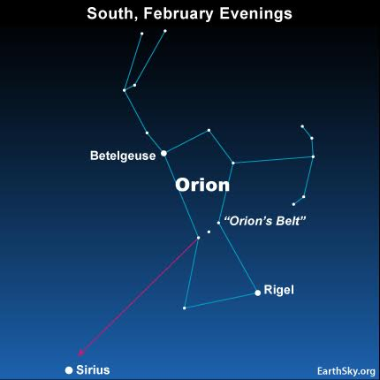

 Sirius is well known as the Dog Star, because it’s the chief star in the constellation Canis Major, the Big Dog. Have you ever heard anyone speak of the dog days of summer? Sirius is behind the sun as seen from Earth in Northern Hemisphere summer. In late summer, it appears in the east before sunrise, near the sun in our sky. The early stargazers might have imagined the double-whammy of Sirius and the sun caused the hot weather, or dog days. In ancient Egypt, the name Sirius signified its nature as scorching or sparkling. The star was associated with the Egyptian gods Osiris, Sopdet and other gods. Ancient Egyptians noted that Sirius rose just before the sun each year immediately prior to the annual flooding of the Nile River. Although the floods could bring destruction, they also brought new soil and new life. Osiris was an Egyptian god of life, death, fertility and rebirth of plant life along the Nile. Sopdet – who might have an even closer association with the star Sirius – began as an agricultural deity in Egypt, also closely associated with the Nile. The Egyptian new year was celebrated with a festival known as the Coming of Sopdet. In India, Sirius is sometimes known as Svana, the dog of Prince Yudhisthira. The prince and his four brothers, along with Svana, set out on a long and arduous journey to find the kingdom of heaven. However, one by one the brothers all abandoned the search until only Yudhisthira and his dog, Svana, were left. At long last they came to the gates of heaven. The gatekeeper, Indra, welcomed the prince but denied Svana entrance. Yudhisthira was aghast and told Indra that he could not forsake his good and faithful servant and friend. His brothers, Yudhisthira said, had abandoned the journey to heaven to follow their hearts’ desires. But Svana, who had given his heart freely, chose to follow none but Yudhisthira. The prince said that, without his dog, he would forsake even heaven. This is what Indra had wanted to hear, and then he welcomed both the prince and the dog through the gates of heaven.